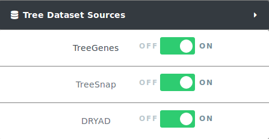
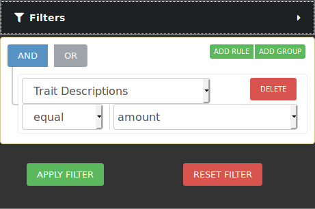
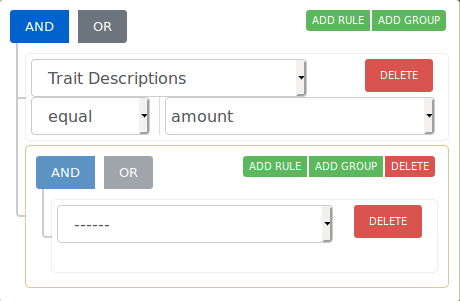
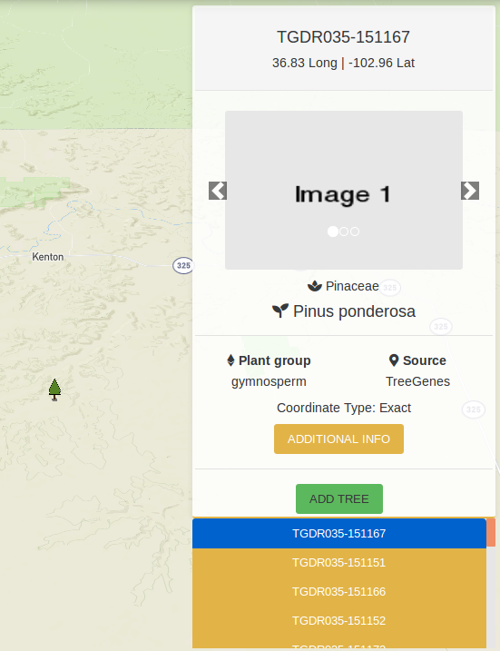
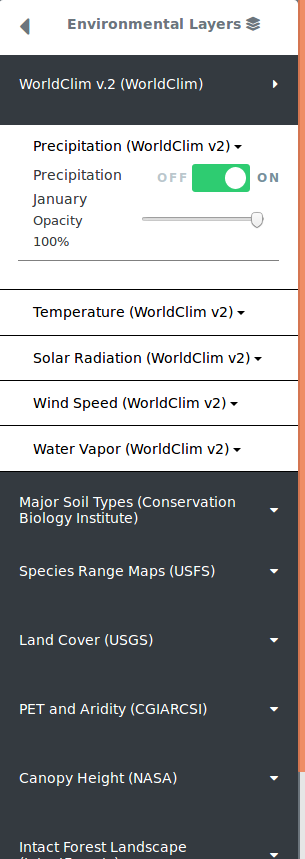
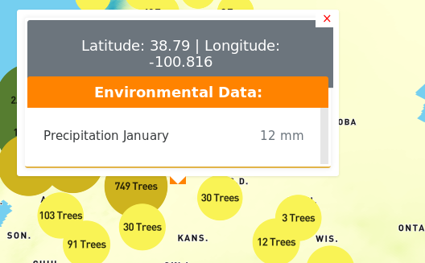
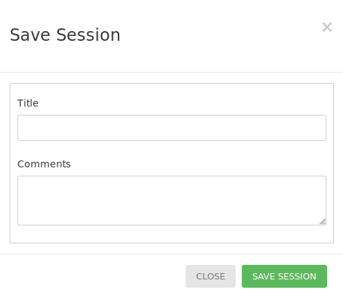
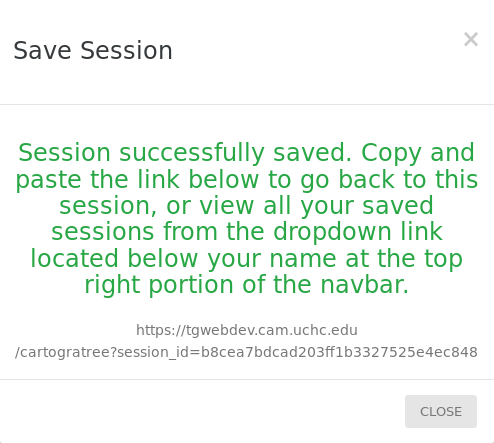

4. Users
Cartograplant is a web application that allows users to visualize and analyze plant data from various sources, including TreeGenes, TreeSnap, and submitted studies. It provides an interactive map interface where users can select datasets, filter plants, and analyze phenotypic and genotypic data.
4.1. Basic User Interface
4.2. Select dataset sources to include
Cartograplant enables the analysis of trees from three data sources: Internal submissions, TreeGenes, Direct Submissions, TreeSnap, BIEN, Evome, MAMA EAB and WFID. The user can choose which trees from which datasets they want on the map, or any combination of them. When applying filters only trees from selected datasets are effected.
To contribute and submit your own data for TreeGenes, you can use TPPS: https://treegenesdb.org/tpps. This is a module that streamlines the submission process for plant related studies. The documentation for TPPS can be found here: https://tpps.readthedocs.io/
You can also contribute to TreeSnap by downloading the app and submitting pictures of the trees that you find: https://treesnap.org/.

4.3. Select and filter trees
Users can select from the left pane the trees to be included in an analysis. Cartograplant has tens of thousands of trees, and it will only continue to grow. To only look at the trees of interest to you, you can filter the trees on the map by taxonomy, publication, genotype, and/or phenotype.

If you want to narrow your search even more, you can make use of the combination filters offered by making use of the AND/OR switches and the ADD RULE and ADD GROUP buttons. Resetting the filter removes all the currently active filters and shows all trees available on the map again.

The operation that is currently selected for each group is colored blue. The selection condition available for each property is EQUAL and NOT EQUAL. After clicking Apply Filters, the map should move to the area of interest where the filtered trees are located.
Hovering over a tree icon reveals how many trees there are at that location. Clicking on a tree icon opens a map overlay located at the top right of the map. This map overlay shows information about the currently selected tree and any images that are present for that tree. Clicking on the ADDITIONAL INFO button creates a popup which shows the publication, markers and phenotypes recorded for the tree. At the bottom is a list of the trees located at this area. You can click on any of the tree IDs on the list to view information for that tree. There is also an ADD TREE button which puts the tree in the list of trees that will be part of the analysis.

4.3.1. Filtering by passing parameters to URL
You can also filter the trees on load of the map by adding additional parameters to the URL. The base URL for Cartograplant is: https://treegenesdb.org/Cartograplant If a valid session has been provided then the URL is: https://treegenesdb.org/Cartograplant?session_id=<session_id>
The additional parameters that you can pass include TGDR study accession, species, genus, and family. Passing multiple of these parameters will result in a conjunction of the options. An example filter by passing URL arguments is: https://treegenesdb.org/Cartograplant?accession=TGDR002 https://treegenesdb.org/Cartograplant?species=Abies%20alba
4.4. Select environmental data
Users can also select from the left pane, the environmental values to be included in an analysis, by turning environmental layers on or off. The environmental layers are layered on top of each other, with the latest layer placed on top of previously selected layers. Clicking on any random point on the map with at least one active layer will show the environmental values for that location.

Some enviornmental layers contain additional filters which will also be seen under the on/off toggle button. For example, range maps may have color options that allow you to color each range map with a different color as a way to differentiate between multiple selected layers. Some environmental layers contain a year range slider filter which allows you to filter between a starting year and ending year. For those that can filter by year, you will see a range slider in which the left select represents the starting year and while the right select represents the ending year. Adjusting these filters will filter the data in realtime.
4.5. Get location information
Users can display the values at a particular location on the map, by clicking on the map at that location. The pop-up window, will display the trees present at that location (if there are any), and the values from the environmental layers selected.


At zoomed out levels the trees are clustered and are represented by circles. The color and size of the circle indicates how many trees there are in the cluster. The user can click on a cluster to zoom in and view the individual trees.
4.7. Saving and loading saved searches and config
The filters applied, layers activated, trees chosen and current state of the map can be saved to go back to at a later date by clicking the SAVE SESSION button located at the bottom of the left panel. If the save is successful, a popup will appear with a link with a session_id supplied for Cartograplant which you can follow at anytime to go back to this state of the map. Verified users that are logged in to their account can also save a session to their account with a title and comment.




5. Analysis Panel
Logged-in users have permission to perform landscape genomics analysis.
5.1. About the Analysis Panel
Within the map interface, select the dataset to be used, select/deselect specific trees, and choose which publications to include.
Within the analysis panel, users can select the environmental layers to be used and the environmental variables to be included in the analysis. Analysis panels are broken up into key stages that represent a typical landscape genomics analysis:
Study selection
Filter By Traits (if studies contain phenotypes)
Filter By Genotypes
Filtering & Imputation
Population structure
Add Environmental Data
Run Analysis
5.2. Running an Analysis
Note
Users may navigate tabs by either clicking Next on the bottom right corner or clicking directly on the tabs.
Login to your account on TreeGenesDB.
Navigate to CartograPlant and select the plants you want to include in the analysis.
Click on Analyze at the top panel.
In the Manage tab, you can select:
The studies to be used
The kind of analysis to be performed
The workspace name to store workflow output for downloading
Click Next at the bottom right of the analysis panel to proceed to the next tab
Select plants and traits for downstream analysis and click Next
If multiple studies were staged, select study combination for further analysis based on number of overlapping markers and click Next
In the Filtering & Imputation panel, you can:
select statistics to visualize
apply combinations of filtering thresholds
In the Population Structure panel, you can:
select the input vcf from the workspace
number of ancestors (K) to run based off
parameters for linkage pruning by plink
Note
The workflow will visualize only the run that has the lowest cross validation error.
In the Add Environmental Data, you can:
select the environmental layers to include in further analysis (Genome-wide association)
measure the correlation between two or more environmental variables
At the Run Analysis stage the bed, bim, and fam files generated from Population Structure panel and the environmental file generated from the Add Environmental Data panel. Select the kind of model you would like to run: linear model or linear mixed model.
If a linear mixed model is chosen users will provide parameters for relatedness matrix for inclusion in the model run.
5.2.1. How can I see the code that was run?
After workflow completion, commands executed are written to a file by pulling from the process script field with nextflow log -f script.
5.2.2. How do I select Plants?
When you click on a plant icon on the map, a detailed view pops up to the right of the screen. On the bottom of this map overlay, there is an “Add All” button to add all the plants at this location for analysis, and an “Add Plant” button next to the plant ids to add individual plants.
5.2.3. How do I select environmental data?
You can view environmental layers using the environmental layers panel, then clicking on any point in the map when any of the environmental layers active shows the value at that location for the layers active. For analysis, you can select the environmental variables you want based on the layers active.
5.2.4. How long does it take?
Depends on the size of the dataset you selected. Can be anywhere from a couple hours to days.
5.2.5. How do I know when it’s done?
You’ll receive an email notification.
5.2.6. Example Input
Name |
ENV1 |
ENV2 |
ENV3 |
|---|---|---|---|
ID1 |
46 |
89 |
99 |
ID2 |
10 |
2 |
77 |
ID1 |
46 |
89 |
99 |
ID2 |
10 |
2 |
77 |
ID1 |
46 |
89 |
99 |
ID2 |
10 |
2 |
77 |